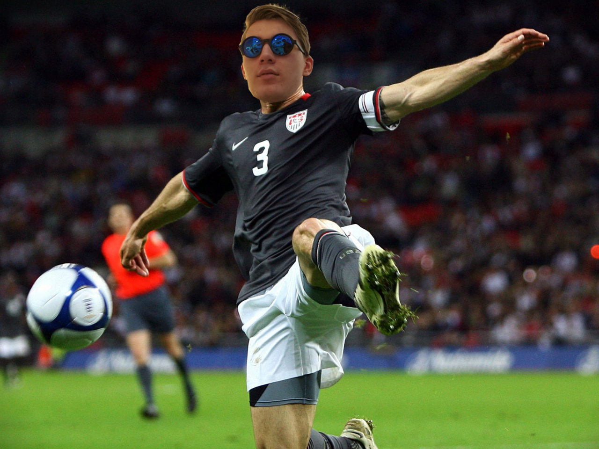

FC Peräkylän Potku is developement specialized football club with over ten active members. Our name dates back to our municipality of residence; Vihti's Peräkylä. FC Peräkylän Potku is a quality based feeder club. Counting members it ranks as one of the smallest clubs in Finland.
Peräkylän Potku's goal is to provide high quality practice environment for all footballers. The club has a full-time job director of football, chief trainer and an office secretary.
The majority of our members are over 20 year old men. For the more energetic players the way forward is made possible by our cooperation with Finland national team.
The club operates mainly in Vihti's Peräkylä.